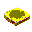

You are the
person to visit this site
This Page is to use your Windows like a MAC!
Last Update:Apr-04-2000
E-WIN for Win32 is Updated.(Ver1.3 to 1.4,Other Tools, August-14-1998)
"Mac_like" Desktop Theme(OS8 Version)
This is "Mac_like" Desktop Theme(OS8 Version). This file is including 6 themes(for VGA,SVGA and XGA/Japanese and English).
"Mac_like" Desktop Theme(English Version)
This is "Mac_like" Desktop Theme(English Version). This file is including 3 themes(for VGA,SVGA and XGA).
If you don't have a extracting tool for "*.zip" and/or "*.lzh" files, please use "lhasa011"(Copyright(C)1997 by Mr.Takemura).
Installer is Japanese only. For install "Lhasa",execute "lhasa011.exe" and click Bottom_Left Button
Microsoft Plus! Demo Version
If you don't have MS-Plus!,Microsoft distributes "MS-Plus! demo version".
Download form here(http://www.microsoft.com/windows/download/plusdemo.exe)
 "Mac_like" icons and cursors
"Mac_like" icons and cursors
| Samples of "macicons.lzh" | ||||||
My Computer Icon |
Trash Icon (Empty) |
Trash Icon (Empty) |
Trash Icon (Full) |
Trash Icon (Full) |
Folder Icon(Close) |
Folder Icon(Open) |
Harddisk Icon |
Watch Cursor |
Arrow Cursor |
Toaster Cursor |
 Bread Cursor |
Eyes Cursor |
|
 BeMac!
Screen Saver(16bit)
BeMac!
Screen Saver(16bit)
This is BeMac! Screen Saver ver.3.0.0e(English version)
This screen saver is simulate start up sequence of Macintosh in its own way.
This software is a Beerware. If you like this software, please send 2 cans of your fevarite beer or equivalent to me.
Download(mac300e.exe,Self extractive archive)
 Data for BeMac! Screen
Saver ver.3.0.0.e
Data for BeMac! Screen
Saver ver.3.0.0.e
System75.exe(Self extractive archive)
Rhapsody.exe(Self extractive
archive)
 E-WIN
for WIN32 Version 1.4(Windows95/98/NT4.0)
E-WIN
for WIN32 Version 1.4(Windows95/98/NT4.0)
All softwares for Windows95 has an "EXIT Button" on the right top of their window.
But Windows desktop has no "EXIT Button" there.
This software is adding an "EXIT Buuton" on the right top of Windows95/98/NT4.0 desktop.<Ver1.3 -> Ver1.4>
- Add "ShutDown","Restart" and "Log Off" to right click "Popup Menu".
This software is a Beerware. If you like this software, please send 2 cans of your fevarite beer or equivalent to me.
Download(E-win14.exe, Self extrative archive)
Masao Yamazaki's Home Page on Niftyserve
Vector Design Inc.[PACK FOR WIN & PACK FOR MAC]